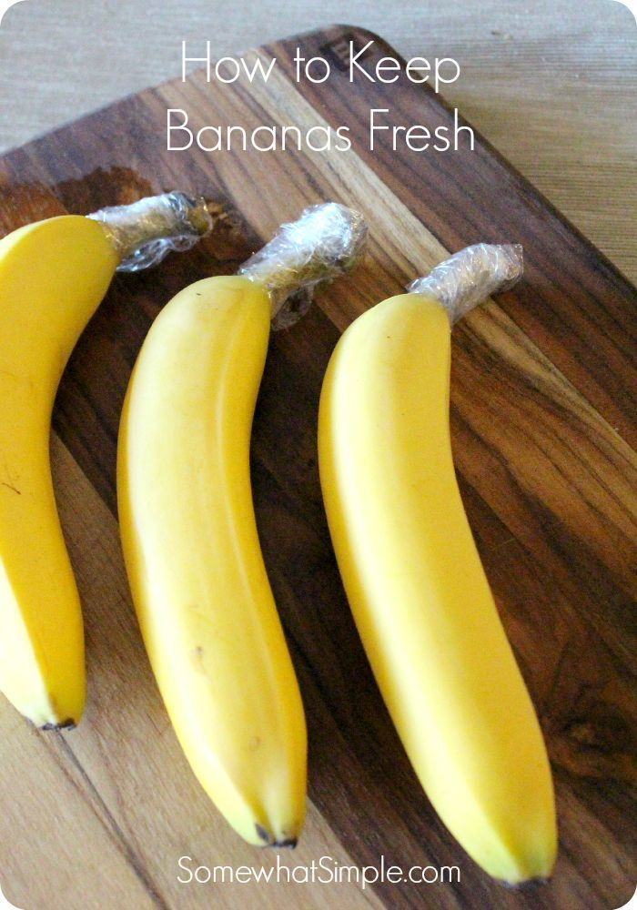
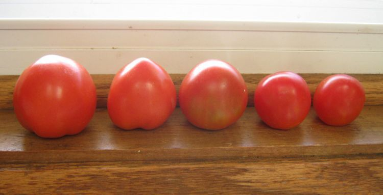
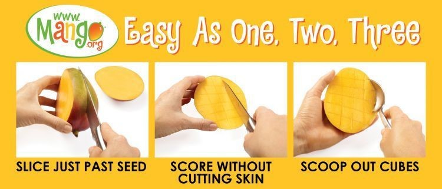
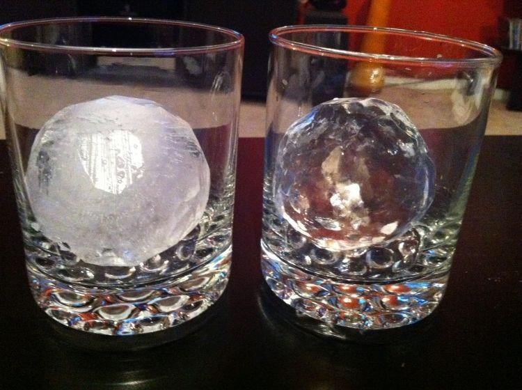
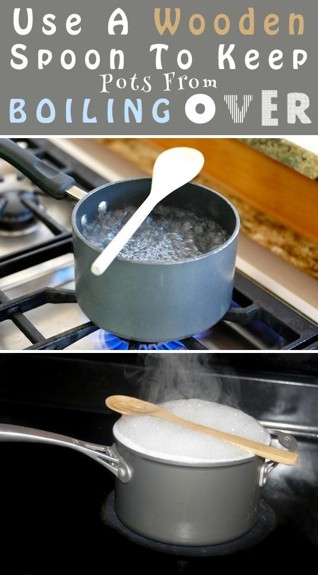
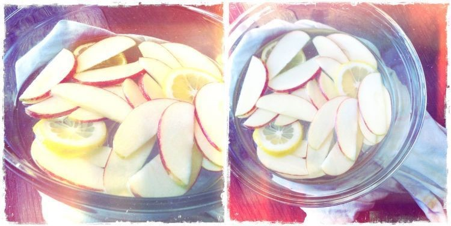

Ketahui 7 Trik Dapur Ini
1. Kamu Bisa Lho Membuat Pisang Mentah Jadi Matang Hanya Dalam 24 Jam
Simpan pisang mentahmu di dalam tas kertas atau plastik tertutup, bersama dengan buah apel, tomat, atau pir utuh yang belum dipotong atau dikupas. Apel, tomat, dan pir akan mengeluarkan gas ethylene yang akan membuat pisangmu matang lebih cepat. Cek deh kalau udah sehari semalam. Pasti hasilnya kayak sihir… sim salabim, pisang mentah jadi matang. Atau kalau semaleman masih kurang cepat, masukin aja ke oven! Pisangmu bisa langsung matang.
2. Kalau Kamu Mau Pisangmu Tahan Lama, Ini Caranya
Pisahkan buah-buah pisangmu dari tandannya, lalu bungkus ujung buahnya dengan plastik atau alumunium foil. Ujung pisang itu yang ngeluarin gas ethylene, makanya harus “dibekap”. Kalau mau menambah umurnya lagi, kamu bisa masukin pisangmu ke dalam kulkas.
3. Buat Tomat Kamu Tahan Lama!!
Cara membuat tomat kamu tahan lama adalah simpan dalam suhu ruangan dan keadaan tomat terbalik. Dengan membalik tomat, kamu mencegah masuknya udara dari luka bekas petikan di dekat batang, sekaligus menghambat keluarnya kelembaban dalam buah yang bisa membuat tomatmu kempes.
4. Nah, Kalau Trik Ngupas Mangga, Udah Tahu Belum?
Gak perlu deh kamu menguliti mangga kayak kamu mengupas apel. Mulai sekarang, iris saja bagian-bagian samping mangga di luaran bijinya. Nah terus bagian dagingnya kamu sisir pelan-pelan pakai pisau menjadi bentuk kotak-kotak gitu. Ada beberapa orang yang membalikkan kulit mangga, terus dimakan begitu aja. Tapi kalau gak mau kotor, pakai saja sendok untuk menyendok daging mangga sampai bersih. Taruh piring, dan nikmati!
5. Es Batumu Bisa Lebih Cantik Kalau Airnya Direbus Dulu
Mau es batumu jadi bening biar nggak sekelam hidupmu? Rebus dulu air yang akan kamu bekukan. Walaupun kamu pakai air mineral yang sudah aman diminum, proses merebus air bakalan bisa lebih banyak menghilangkan kandungan gelembung udara dalam air. Nah gelembung-gelembung itulah yang kalau membeku akan menjadi keputih-putihan. Jadi kalau mau es batumu cantik, rebuslah airmu terlebih dahulu.
6. Kalau Tahu Cara Ini, Rebusan Kaldumu Gak Bakal Tumpah-Tumpah dan Perlu Diaduk Terus
Pasti kamu sering kan harus ngaduk rebusan mie atau kaldu supaya air nya gak membludak keluar kan? Gak bisa ditinggal! Apalagi kalau apinya besar, lebih cepat lagi naik ke atas. Alhasil kamu harus pakai api kecil. Nah itu nunggunya lebih lama lagi.
Coba kamu taruh spatula kayu di atas pancimu. Kamu pasti terheran-heran karena airnya bisa tetap dalam panci walaupun kamu gak ngaduk sekalipun. Penjelasan ilmiahnya sih Busep gak begitu ngerti, tapi yang pasti sendok kayu itu memecahkan balon-balon udara yang sampai di permukaan atas panci. Jadi udara yang memberi tenaga air buat naik ke atas itu gak bakal melewati batas panci. Tapi sendok atau spatula besi gak bakal punya efek yang sama lho. Soalnya bahan-bahan itu terlalu cepat panas.
7. Asam Sitrat Bisa Buat Potongan Apelmu Tetap Putih
Cuma dalam waktu beberapa menit aja potongan-potongan apel yang belum sempat kamu makan pasti berubah warnanya jadi kecoklatan-coklatan gimana gitu… Kalau warnanya gak cantik gitu jadi malas gak sih makannya?
Nah, coba deh, trik ini. Rendam dulu irisan apelmu ke dalam air dingin yang sudah dicampur perasan atau potongan lemon, jeruk, atau jeruk nipis. Asam sitrat dan vitamin C dari buah sitrus akan memperlambat proses oksidasi yang menyebabkan apel berubah warna jadi cokelat. Cukup 5 menit aja, dijamin tampilan apel dan pir-mu tetap cantik untuk waktu yang lama.